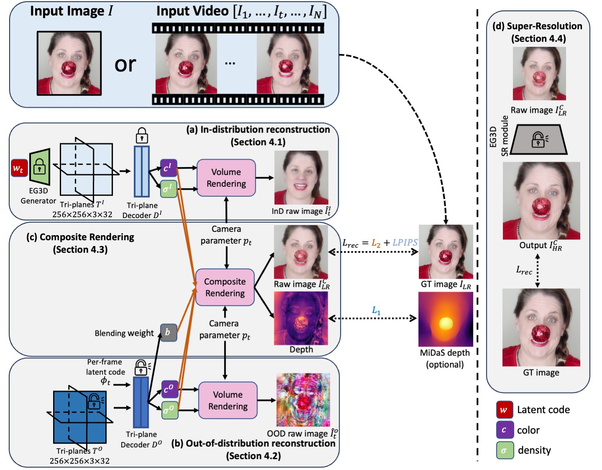

Abstract
3D-aware GANs offer new capabilities for view synthesis while preserving the editing functionalities of their 2D counterparts. GAN inversion is a crucial step that seeks the latent code to reconstruct input images or videos, subsequently enabling diverse editing tasks through manipulation of this latent code. However, a model pre-trained on a particular dataset (e.g., FFHQ) often has difficulty reconstructing images with out-of-distribution (OOD) objects such as faces with heavy make-up or occluding objects. We address this issue by explicitly modeling OOD objects from the input in 3D-aware GANs. Our core idea is to represent the image using two individual neural radiance fields: one for the in-distribution content and the other for the out-of-distribution object. The final reconstruction is achieved by optimizing the composition of these two radiance fields with carefully designed regularization. We demonstrate that our explicit decomposition alleviates the inherent trade-off between reconstruction fidelity and editability. We evaluate reconstruction accuracy and editability of our method on challenging real face images and videos and showcase favorable results against other baselines.
Method Overview
Single image
Reconstruction on Internet Images
Our method can be applied to diverse images from the Internet. We show reconstruction results from single images below.
Input
W
Ours
Semantic editing on Internet Images
We can edit it with available semantic editing methods, e.g., InterfaceGAN, StyleCLIP.
eyeglasses
View synthesis on Internet Images
Unlike HFGI3D, which warps and computes visibility map, resulting a time-consuming optimization, our method only relies on a depth map from MiDaS, and can synthesize faithful views.
Videos
Reconstruction on Internet Videos
Our method can be applied to diverse videos from the Internet. We show reconstruction results below.
Semantic editing on Internet Videos
We can edit it with available semantic editing methods, e.g., InterfaceGAN, StyleCLIP.
eyeglasses
View synthesis on Internet videos
After reconstruction, we can acquire novel views.
OOD object removal on Internet videos
By setting the weight of OOD pixels to 0, we can remove the OOD object.
Ablation study
w/o blending weight regularization
w/ blending weight regularization (Eqn.6)
w/o blending weight regularization
w/ blending weight regularization (Eqn.6)
Failure cases
OOD dominates: When editing on the OOD region, e.g., adding eyeglasses to the heavy makeup region, because the blending weights are closer to 1, the eyeglasses in the in-distribution radiance field are hard to be added.
Double glasses: Since our OOD radiance field has no knowledge about the GAN and faces prior, when the OOD object itself is glasses, adding eyeglasses introduces duplicate objects.
Related Links
Our method is built upon prior work. We share some useful links below.
3D-aware GAN
EG3D: A 3D-aware GAN built upon StyleGAN.GAN inversion
PTI: A optimization-based (hybrid) GAN inversion method by tuning the generator.IDE-3D: An encoder-based GAN inversion approach.
GOAE: An encoder-based GAN inversion approach.
HFGI3D: An optimization-based GAN inversion approach.
VIVE3D: An optimization-based GAN inversion approach for videos.
GAN-based editing
StyleCLIP: A language-based image editing approach via pre-trained StyleGAN.InterfaceGAN: A image editing technique.
BibTeX
@inproceedings{xu2024innout,
author = {Xu, Yiran and Shu, Zhixin and Smith, Cameron and Oh, Seoung Wug and Huang, Jia-Bin},
title = {In-N-Out: Faithful 3D GAN Inversion with Volumetric Decomposition for Face Editing},
booktitle = {CVPR},
year = {2024},
}